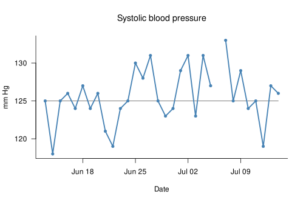
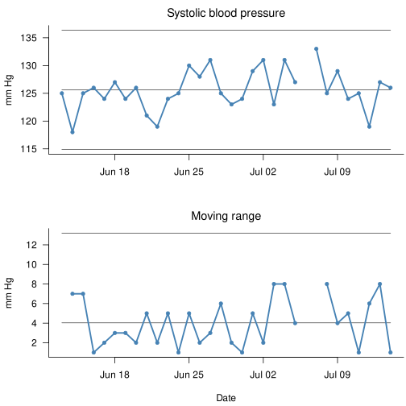
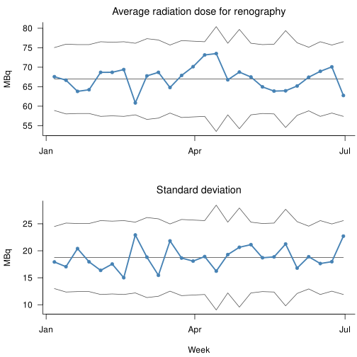
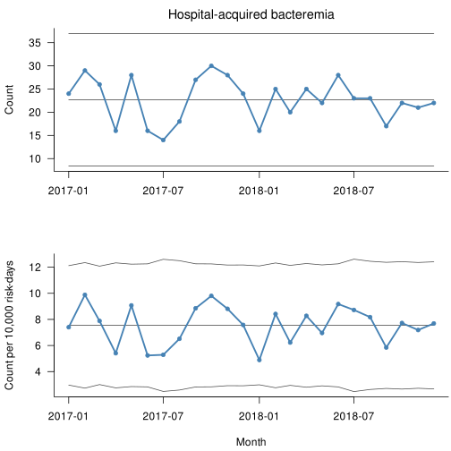

Chapter 9 Core R Functions to Construct SPC Charts
Until now, we have calculated control limits manually before plotting. In this chapter, we introduce a library of R functions that work together to automate the main steps involved in constructing SPC charts.
We will not go through each of these functions in detail, but we encourage you to study them carefully in order to understand how they work individually and how they work together. We also encourage you to adapt and improve them to suit your own needs.
In total, the library consists of 17 functions. However, the user only needs to interact directly with one of them: spc(). The source code for the full function library is provided in the section at the end of this chapter.
The main function, spc(), is an extended version of the improved spc() function introduced in Chapter 7.
Most importantly, it is no longer necessary to calculate control limits manually. Instead, we provide a chart argument, which should be one of the following: ‘run’, ‘xbar’, ‘s’, ‘i’, ‘mr’, ‘c’, ‘u’, or ‘p’. If no chart argument is supplied, the function produces a run chart.
We also no longer need to use the somewhat clumsy $ notation or the with() function to access variables inside a data frame. Instead, we can pass the name of the data frame to the data argument.
Finally, for X-bar and S charts, there is no longer any need to aggregate the data in advance. That task is handled by the spc.aggregate() function, which is also responsible for calling the appropriate functions to calculate centre lines and control limits and to perform the runs analysis.
After completing these steps, spc.aggregate() returns a data frame containing all the information needed to construct the plot. The actual drawing of the chart is then handled by the plot.spc() function.
9.1 Examples
This section gives examples of a run chart and each of the Magnificent Seven. Documentation for the datasets used in the examples is provided in Appendix A.
9.1.1 Run chart
## date systolic diastolic pulse
## 1 2012-06-13 125 77 56
## 2 2012-06-14 118 76 59
## 3 2012-06-15 125 75 59
## 4 2012-06-16 126 73 69
## 5 2012-06-17 124 77 70
## 6 2012-06-18 127 83 63
Figure 9.1: Run chart
9.1.2 I and MR charts for individual measurements
# Setup plotting area to hold two plots on top of each other and adjust margins
op <- par(mfrow = c(2, 1),
mar = c(4, 4, 2, 0) + 0.2)
spc(date, systolic,
data = d,
chart = 'i',
main = 'Systolic blood pressure',
ylab = 'mm Hg',
xlab = NA)
spc(date, systolic,
data = d,
chart = 'mr',
main = 'Moving range',
ylab = 'mm Hg',
xlab = 'Date')
Figure 9.2: I and MR charts
9.1.3 X-bar and S charts for averages and standard deviations of measurements
d <- read.csv('data/renography_doses.csv',
comment.char = '#',
colClasses = c(date = 'Date',
week = 'Date'))
head(d)## date week dose
## 1 2014-01-06 2014-01-06 51
## 2 2014-01-06 2014-01-06 48
## 3 2014-01-06 2014-01-06 75
## 4 2014-01-06 2014-01-06 53
## 5 2014-01-06 2014-01-06 71
## 6 2014-01-06 2014-01-06 84op <- par(mfrow = c(2, 1),
mar = c(4, 4, 2, 0) + 0.2)
spc(week, dose,
data = d,
chart = 'xbar',
main = 'Average radiation dose for renography',
ylab = 'MBq',
xlab = NA)
spc(week, dose,
data = d,
chart = 's',
main = 'Standard deviation',
ylab = 'MBq',
xlab = 'Week')
Figure 9.3: X-bar and S charts
9.1.4 C and U charts for counts and rates
## month ha_infections risk_days deaths patients
## 1 2017-01-01 24 32421 23 100
## 2 2017-02-01 29 29349 22 105
## 3 2017-03-01 26 32981 13 99
## 4 2017-04-01 16 29588 14 85
## 5 2017-05-01 28 30856 17 98
## 6 2017-06-01 16 30544 15 85op <- par(mfrow = c(2, 1),
mar = c(4, 4, 2, 0) + 0.2)
spc(month, ha_infections,
data = d,
chart = 'c',
main = 'Hospital-acquired bacteremia',
ylab = 'Count',
xlab = NA)
spc(month, ha_infections, risk_days,
data = d,
chart = 'u',
multiply = 10000,
main = NA,
ylab = 'Count per 10,000 risk-days',
xlab = 'Month')
Figure 9.4: C and U charts
9.2 TODO
One obvious shortcoming of this function library is that it lacks error checking. If you plan to use these functions in a production environment or as part of your own SPC package, you will need to add this yourself. At a minimum, you should check automatically that the inputs are of the expected types and that the x, y, and n arguments have the same lengths. As a starting point, see the stopifnot() function.
9.3 Further up, further in
We now have a functioning library of R functions that automates most of the steps involved in constructing SPC charts. There is still plenty of room for improvement, but the library should be enough to get you started and, more importantly, to give you a deeper understanding of the considerations involved in plotting SPC charts.
In the next chapter, we take a brief look at how to use ggplot2() for plotting instead of the plot() function from base R.
R function library
# Master SPC function ##########################################################
#
# Constructs an SPC chart.
#
# Invisibly returns a data frame of class 'spc'.
#
# x: Numeric or date(time) vector of subgroup values to plot along the x
# axis. Or, if y is NULL, x values will be used for y coordinates.
# y: Numeric vector of measures or counts to
# plot on the y axis (numerator).
# n: Numeric vector of subgroup sizes (denominator).
# data: Data frame containing the variables used in the plot.
# multiply: Number to multiply y axis by, e.g. 100 to get percentages rather
# than proportions.
# chart: Character value indicating the chart type. Possible values are:
# 'run' (default), 'xbar', 's', 'i', 'mr', 'c', 'u', and 'p'.
# plot: Logical, if TRUE (default), plots an SPC chart.
# print: Logical, if TRUE, prints a data frame with coordinates.
# ...: Other arguments to the plot() function, e.g. main, ylab, xlab.
#
spc <- function(x,
y = NULL,
n = 1,
data = NULL,
multiply = 1,
chart = c('run', 'xbar', 's', 'i', 'mr', 'c', 'u', 'p'),
plot = TRUE,
print = FALSE,
...) {
# Get data from data frame if data argument is provided, or else get data
# from the parent environment.
x <- eval(substitute(x), data, parent.frame())
y <- eval(substitute(y), data, parent.frame())
n <- eval(substitute(n), data, parent.frame())
# Get chart argument.
chart <- match.arg(chart)
# If y argument is missing, use x instead.
if (is.null(y)) {
y <- x
x <- seq_along(y)
}
# Make sure that the n vector has same length as y.
if (length(n) == 1) {
n <- rep(n, length(y))
}
# Make sure that numerators and denominators are balanced. If one is missing,
# the other should be missing too.
xna <- !complete.cases(data.frame(y, n))
y[xna] <- NA
n[xna] <- NA
# Aggregate data by subgroups.
df <- spc.aggregate(x, y, n, chart)
# Multiply y coordinates if needed.
df$y <- df$y * multiply
df$cl <- df$cl * multiply
df$lcl <- df$lcl * multiply
df$ucl <- df$ucl * multiply
# Make plot.
if (plot) {
plot.spc(df, ...)
}
# Print data frame.
if (print) {
print(df)
}
# Make data frame an 'spc' object and return invisibly.
class(df) <- c('spc', class(df))
invisible(df)
}
# Aggregate function ###########################################################
#
# Calculates subgroup lengths, sums, means, and standard deviations. Called
# from the spc() function.
#
# Returns a data frame of x, y, n, and centre line and control limits.
#
# x: Numerical, numbers or dates for the x axis.
# y: Numerical, measure or count to plot.
# n: Numerical, denominator (if any).
# chart: Character, type of chart.
#
spc.aggregate <- function(x, y, n, chart) {
df <- data.frame(x, y, n)
# Get function to calculate centre line and control limits.
chart.fun <- get(paste('spc', chart, sep = '.'))
# Split data frame by subgroups
df <- split(df, df$x)
# Calculate subgroup lengths, sums, means, and standard deviations.
df <- lapply(df, function(x) {
data.frame(x = x$x[1],
n = sum(x$n, na.rm = TRUE),
sum = sum(x$y, na.rm = TRUE),
mean = sum(x$y, na.rm = TRUE) / sum(x$n, na.rm = TRUE),
sd = sd(x$y, na.rm = TRUE),
chart = chart)
})
# Put list elements back together in a data frame.
df <- do.call(rbind, c(df, make.row.names = FALSE))
# Replace any zero length subgroups with NA.
df$n[df$n == 0] <- NA
# Calculate the weighted subgroup mean.
df$ybar <- weighted.mean(df$mean, df$n, na.rm = TRUE)
# Calculate centre line and control limits.
df <- chart.fun(df)
# Add runs analysis
if (chart == 'mr') {
df$runs.signal <- FALSE
} else {
df$runs.signal <- runs.analysis(df$y, df$cl)
}
# Find data points outside control limits.
df$sigma.signal <- (df$y < df$lcl | df$y > df$ucl)
df$sigma.signal[is.na(df$sigma.signal)] <- FALSE
# Return data frame.
df[c('x', 'y', 'n',
'lcl', 'cl', 'ucl',
'sigma.signal',
'runs.signal',
'chart')]
}
# Plot function ################################################################
#
# Draws an SPC chart from data provided by the spc() function. Is usually
# called from the spc() function, but may be used as stand-alone for plotting
# data frames of class spc created by the spc() function.
#
# Invisibly returns the data frame
#
# x: Data frame produced by the spc() function.
# ...: Additional arguments for the plot() function, e.g. title and labels.
#
plot.spc <- function(x, ...) {
col1 <- 'steelblue'
col2 <- 'grey30'
col3 <- 'tomato'
# Make room for data and control limits on the x axis.
ylim <- range(x$y,
x$lcl,
x$ucl,
na.rm = TRUE)
# Draw empty plot.
plot(x$x, x$y,
type = 'n',
bty = 'l',
las = 1,
ylim = ylim,
font.main = 1,
...)
# Add lines and points to plot.
lines(x$x, x$cl,
col = ifelse(x$runs.signal, col3, col2),
lty = ifelse(x$runs.signal, 'dashed', 'solid'))
lines(x$x, x$lcl, col = col2)
lines(x$x, x$ucl, col = col2)
lines(x$x, x$y, col = col1, lwd = 2.5)
points(x$x, x$y,
pch = 19,
cex = 0.8,
col = ifelse(x$sigma.signal, col3, col1)
)
invisible(x)
}
# Runs analysis function #######################################################
#
# Tests time series data for non-random variation in the form of
# unusually long runs or unusually few crossings. Called from the
# spc.aggregate() function.
#
# Returns a logical, TRUE if non-random variation is present.
#
# x: Numeric vector.
# cl: Numeric vector of length either one or same length as y.
#
runs.analysis <- function(y, cl) {
# Trichotomise data according to position relative to CL:
# -1 = below, 0 = on, 1 = above.
runs <- sign(y - cl)
# Remove NAs and data points on the centre line.
runs <- runs[runs != 0 & !is.na(runs)]
# Find run lengths.
run.lengths <- rle(runs)$lengths
# Find number of useful observations (data points not on centre line).
n.useful <- sum(run.lengths)
# Find longest run above or below centre line.
longest.run <- max(run.lengths)
# Find number of crossings.
n.crossings <- length(run.lengths) - 1
# Find upper limit for longest run.
longest.run.max <- round(log2(n.useful)) + 3
# Find lower limit for number of crossing.
n.crossings.min <- qbinom(0.05, n.useful - 1, 0.5)
# Return result.
longest.run > longest.run.max | n.crossings < n.crossings.min
}
# Limits functions #############################################################
#
# These functions calculate coordinates for the centre line and control limits
# of SPC charts. They are not meant to be called directly but are used by the
# spc.aggregate() function.
#
# Return data frames with coordinates for centre line and control limits.
#
# x: A data frame containing the values to plot.
#
spc.run <- function(x) {
x$y <- x$mean
x$cl <- median(x$y, na.rm = TRUE)
x$lcl <- NA_real_
x$ucl <- NA_real_
x
}
spc.i <- function(x) {
x$y <- x$mean
xbar <- x$ybar
amr <- mean(abs(diff(x$y)), na.rm = T)
sss <- 2.66 * amr
x$cl <- xbar
x$lcl <- xbar - sss
x$ucl <- xbar + sss
x
}
spc.mr <- function(x) {
x$y <- c(NA, abs(diff(x$mean)))
amr <- mean(x$y, na.rm = TRUE)
x$cl <- amr
x$lcl <- NA_real_
x$ucl <- 3.267 * amr
x
}
spc.xbar <- function(x) {
x$y <- x$mean
a3 <- a3(x$n)
xbarbar <- weighted.mean(x$mean, x$n, na.rm = TRUE)
sbar <- weighted.mean(x$sd, x$n, na.rm = TRUE)
sss <- a3 * sbar
x$cl <- xbarbar
x$lcl <- xbarbar - sss
x$ucl <- xbarbar + sss
x
}
spc.s <- function(x) {
x$y <- x$sd
sbar <- weighted.mean(x$sd, x$n, na.rm = TRUE)
b3 <- b3(x$n)
b4 <- b4(x$n)
x$cl <- sbar
x$lcl <- b3 * sbar
x$ucl <- b4 * sbar
x
}
spc.c <- function(x) {
x$y <- x$sum
cbar <- mean(x$y, na.rm = TRUE)
sss <- 3 * sqrt((cbar))
x$cl <- cbar
x$lcl <- pmax(0, cbar - sss)
x$ucl <- cbar + sss
x
}
spc.u <- function(x) {
x$y <- x$mean
ubar <- x$ybar
sss <- 3 * sqrt((ubar / x$n))
x$cl <- ubar
x$lcl <- pmax(0, ubar - sss, na.rm = TRUE)
x$ucl <- ubar + sss
x
}
spc.p <- function(x) {
x$y <- x$mean
pbar <- x$ybar
sss <- 3 * sqrt((pbar * (1 - pbar)) / x$n)
x$cl <- pbar
x$lcl <- pmax(0, pbar - sss)
x$ucl <- pmin(1, pbar + sss)
x
}
# Constants functions ##########################################################
#
# These functions calculate the constants that are used for calculating the
# parameters of X-bar and S charts. Called from the spc.xbar() and spc.s()
# functions
#
# Return a number, the constant for that subgroup size
#
# n: Number of elements in subgroup
#
a3 <- function(n) {
3 / (c4(n) * sqrt(n))
}
b3 <- function(n) {
pmax(0, 1 - 3 * c5(n) / c4(n), na.rm = TRUE)
}
b4 <- function(n) {
1 + 3 * c5(n) / c4(n)
}
c4 <- function(n) {
n[n <= 1] <- NA
sqrt(2 / (n - 1)) * exp(lgamma(n / 2) - lgamma((n - 1) / 2))
}
c5 <- function(n) {
sqrt(1 - c4(n) ^ 2)
}